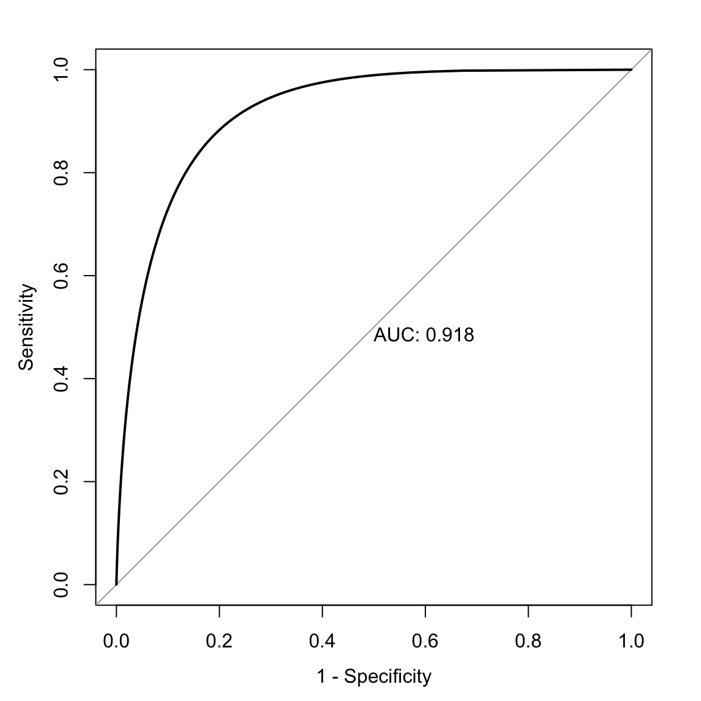

here::here("code", "_common.R") |> source()
# Load packages
if (!requireNamespace("pacman")) install.packages("pacman")
pacman::p_load(
petersenlab, magrittr, viridis, pROC, ROCR, rms, ResourceSelection,
PredictABEL, gridExtra, grid, ggpubr, msir, car, ggrepel, MOTE,
tinytex
)82 Predizione
Prerequisiti
- Leggere il capitolo 9 Prediction del testo di Petersen (2024).
Concetti e Competenze Chiave
Preparazione del Notebook
82.1 Introduzione
Le predizioni possono essere di vario tipo. Alcune riguardano dati categoriali, mentre altre si basano su dati continui. Per i dati categoriali, possiamo valutare le predizioni utilizzando una tabella 2 \(\times\) 2, nota come matrice di confusione, o con modelli di regressione logistica. Invece, per i dati continui, possiamo utilizzare la regressione multipla o varianti come il modello a equazioni strutturali o i modelli misti.
82.2 Calcolo della probabilità di HIV dato un test positivo
Analizziamo un esempio pratico per stimare la probabilità di avere l’HIV, partendo da un test positivo, utilizzando le seguenti informazioni tratte da Petersen (2024):
- Tasso di base dell’HIV (P(HIV)): 0.3% (0.003). Questa è la probabilità che una persona nella popolazione generale abbia l’HIV.
- Sensibilità del test (P(Test+ HIV)): 95% (0.95). È la probabilità che il test risulti positivo quando la persona ha l’HIV.
- Specificità del test (P(Test- ¬HIV)): 99.28% (0.9928). È la probabilità che il test risulti negativo quando la persona non ha l’HIV.
Per calcolare la probabilità di avere l’HIV dato un test positivo \(P(HIV \mid Test+)\), utilizziamo il teorema di Bayes:
\[ P(HIV \mid Test+) = \frac{P(Test+ \mid HIV) \times P(HIV)}{P(Test+)}. \]
Il denominatore rappresenta la probabilità complessiva di ottenere un test positivo e include sia i veri positivi che i falsi positivi:
\[ P(Test+) = P(Test+ \mid HIV) \times P(HIV) + P(Test+ \mid \neg HIV) \times P(\neg HIV), \]
dove:
- \(P(Test+ \mid \neg HIV) = 1 - P(Test- \mid \neg HIV) = 1 - 0.9928 = 0.0072\) (tasso di falsi positivi),
- \(P(\neg HIV) = 1 - P(HIV) = 1 - 0.003 = 0.997\).
Sostituendo i valori:
\[ P(Test+) = (0.95 \times 0.003) + (0.0072 \times 0.997) \approx 0.010027. \]
Ora possiamo calcolare la probabilità di avere l’HIV dato un test positivo:
\[ P(HIV \mid Test+) = \frac{0.95 \times 0.003}{0.010027} \approx 0.2844 \quad \text{(28.44\%)}. \]
Quindi, per un test con le caratteristiche descritte, un risultato positivo indica una probabilità di avere l’HIV pari al 28.44%.
82.3 Calcolo della probabilità di un secondo test positivo
Dopo un primo test positivo, la probabilità di avere l’HIV è aumentata al 28.44%. Ora consideriamo la probabilità di ottenere un secondo test positivo e calcoliamo la probabilità aggiornata di avere l’HIV dopo due test positivi consecutivi.
La probabilità di un secondo test positivo si calcola considerando due scenari:
-
La persona ha l’HIV:
- Probabilità di avere l’HIV dopo il primo test: \(P(HIV \mid Test+) = 0.2844\),
- Probabilità che il test sia positivo: \(P(Test+ \mid HIV) = 0.95\).
-
La persona non ha l’HIV:
- Probabilità di non avere l’HIV dopo il primo test: \(P(\neg HIV \mid Test+) = 1 - P(HIV \mid Test+) = 0.7156\),
- Probabilità che il test sia positivo: \(P(Test+ \mid \neg HIV) = 0.0072\).
Utilizziamo la formula della probabilità totale:
\[ P(\text{Secondo Test+}) = P(Test+ \mid HIV) \times P(HIV \mid Test+) \\ + P(Test+ \mid \neg HIV) \times P(\neg HIV \mid Test+). \]
Sostituendo i valori:
\[ P(\text{Secondo Test+}) = (0.95 \times 0.2844) + (0.0072 \times 0.7156) \approx 0.2753. \]
Applichiamo nuovamente il teorema di Bayes per aggiornare la probabilità:
\[ P(HIV \mid \text{Secondo Test+}) = \frac{P(Test+ \mid HIV) \times P(HIV \mid Test+)}{P(\text{Secondo Test+})}. \]
Sostituendo i valori:
\[ P(HIV \mid \text{Secondo Test+}) = \frac{0.95 \times 0.2844}{0.2753} \approx 0.981 \quad \text{(98.1\%)}. \]
In conclusione,
- Probabilità iniziale: La probabilità iniziale di avere l’HIV nella popolazione è molto bassa (0.3%).
- Primo test positivo: Un primo test positivo aumenta la probabilità al 28.44%.
- Secondo test positivo: Un secondo test positivo porta la probabilità al 98.1%.
Questi risultati dimostrano:
- L’importanza di considerare la prevalenza (tasso di base) nella popolazione.
- Come il teorema di Bayes consenta di aggiornare progressivamente le probabilità sulla base di nuove evidenze.
- L’efficacia dei test ripetuti per aumentare la precisione diagnostica.
L’analisi evidenzia come un approccio bayesiano possa ridurre notevolmente l’incertezza iniziale, fornendo stime più accurate della probabilità di una condizione medica.
82.3.1 Accuratezza delle Predizioni: Versione Migliorata
Dopo l’introduzione sull’uso del teorema di Bayes per la predizione, Petersen (2024) affronta il tema delle predizioni con una tabella 2 × 2. Per spiegare questo caso, l’autore presenta un esempio adattato da Meehl & Rosen (1955).
Immaginiamo che l’esercito americano utilizzi un test per escludere i candidati con basse probabilità di completare l’addestramento di base. Per analizzare l’accuratezza delle predizioni effettuate, possiamo utilizzare una matrice di confusione, che confronta le predizioni del test con i risultati reali.
| Decisione (Predizione) | Adattamento Effettivo (Scarso) | Adattamento Effettivo (Buono) | Totale Predetto | Rapporto di Selezione (SR) |
|---|---|---|---|---|
| Escludere | TP = 86 (0,043) | FP = 422 (0,211) | 508 | SR = 0,254 |
| Trattenere | FN = 14 (0,007) | TN = 1.478 (0,739) | 1.492 | 1 − SR = 0,746 |
| Totale Effettivo | 100 | 1.900 | N = 2.000 | |
| Tasso di Base (BR) | BR = 0,05 | 1 − BR = 0,95 |
82.3.2 La Matrice di Confusione
La matrice di confusione è uno strumento che mette in relazione le predizioni di un modello con i risultati osservati. Nel caso di una predizione binaria (es. sì/no o positivo/negativo), la matrice è organizzata in quattro categorie:
- Vero Positivo (TP): La predizione corretta che identifica una persona con la caratteristica (es. cattivo adattamento).
- Vero Negativo (TN): La predizione corretta che identifica una persona senza la caratteristica.
- Falso Positivo (FP): L’errore in cui si predice la presenza della caratteristica quando in realtà non è presente.
- Falso Negativo (FN): L’errore in cui si predice l’assenza della caratteristica quando in realtà è presente.
Questi quattro risultati consentono di valutare l’accuratezza di un modello.
82.3.3 Tassi Marginali e Indicatori Chiave
Dalla matrice di confusione possiamo calcolare alcuni tassi e indicatori utili:
Tasso di Base (BR): La probabilità che una persona abbia la caratteristica di interesse. Ad esempio: \[ BR = \frac{FN + TP}{N} = \frac{100}{2000} = 0.05 \] Ciò significa che solo il 5% dei candidati ha un cattivo adattamento.
Rapporto di Selezione (SR): La probabilità di essere esclusi dal programma: \[ SR = \frac{TP + FP}{N} = \frac{508}{2000} = 0.254 \] In questo caso, il 25,4% dei candidati è stato escluso.
Percentuale di Accuratezza: Rappresenta la proporzione di predizioni corrette sul totale: \[ \text{Accuratezza} = 100 \times \frac{TP + TN}{N} = 100 \times \frac{86 + 1478}{2000} = 78\% \]
Accuratezza per Caso: Misura la precisione che si otterrebbe effettuando predizioni casuali basate solo sulle probabilità marginali (BR e SR). Per esempio: \[ P(TP) = BR \times SR = 0.05 \times 0.254 = 0.0127 \] \[ P(TN) = (1 − BR) \times (1 − SR) = 0.95 \times 0.746 = 0.7087 \] \[ \text{Accuratezza per Caso} = P(TP) + P(TN) = 0.0127 + 0.7087 = 0.7214 \, (72,14\%) \]
Confrontando il 78% di accuratezza del modello con il 72.14% ottenibile per caso, il modello fornisce un miglioramento del 6%.
82.3.4 L’Importanza del Tasso di Base
Quando il tasso di base è molto basso (come in questo caso, BR = 0.05), l’accuratezza complessiva può essere ingannevole. Se predicessimo che nessuno ha un cattivo adattamento, otterremmo un’accuratezza del 95%, ma il modello non identificherebbe alcun caso di cattivo adattamento.
| Decisione (Predizione) | Adattamento Effettivo (Scarso) | Adattamento Effettivo (Buono) | Totale Predetto |
|---|---|---|---|
| Escludere | TP = 0 | FP = 0 | 0 |
| Trattenere | FN = 100 | TN = 1.900 | 2.000 |
| Totale Effettivo | 100 | 1.900 | N = 2.000 |
In questo caso, l’accuratezza complessiva sarebbe: \[ P(\text{Accuratezza}) = \frac{TP + TN}{N} = \frac{0 + 1.900}{2.000} = 95\%. \]
Questo esempio evidenzia che un’elevata accuratezza complessiva non garantisce un buon modello, specialmente quando il tasso di base è sbilanciato.
In conclusione, l’analisi di una matrice di confusione richiede attenzione ai tassi di base e agli errori, poiché l’accuratezza globale può essere fuorviante. È essenziale confrontare il valore del modello con ciò che si otterrebbe per caso o con strategie alternative, come basarsi solo sul tasso di base. Inoltre, occorre considerare il peso relativo degli errori (falsi positivi e falsi negativi) in base al contesto applicativo. Questi aspetti saranno discussi nel prossimo paragrafo.
82.3.5 Diversi Tipi di Errori e i loro Costi
In un processo di classificazione, non tutti gli errori hanno lo stesso costo. Esistono due tipi principali di errori: i falsi positivi e i falsi negativi, ciascuno con implicazioni diverse che dipendono dal contesto della predizione.
Spesso, l’accuratezza complessiva può essere aumentata affidandosi semplicemente al tasso di base, ma in molte situazioni può essere preferibile utilizzare uno strumento di screening, anche a costo di una minore accuratezza complessiva, se ciò consente di minimizzare errori specifici che hanno costi elevati. Ad esempio:
Screening medico: Consideriamo uno strumento di screening per l’HIV. I falsi positivi (classificare erroneamente una persona come a rischio) comportano costi come la necessità di test di conferma e, talvolta, ansia temporanea per l’individuo. Tuttavia, un falso negativo (non identificare una persona effettivamente a rischio) ha costi molto più alti, poiché potrebbe portare a un mancato intervento precoce, con conseguenze gravi per la salute. In questo caso, i costi associati ai falsi negativi superano di gran lunga quelli dei falsi positivi, rendendo lo screening preferibile nonostante una diminuzione dell’accuratezza complessiva.
Selezione del personale in situazioni di rischio: La CIA, ad esempio, ha utilizzato strumenti di selezione per identificare potenziali spie durante periodi di guerra. Un falso positivo in questo contesto (considerare erroneamente una persona come una spia) potrebbe risultare nell’esclusione di un candidato innocente. Un falso negativo (assumere una persona che è effettivamente una spia) comporta rischi molto più gravi, rendendo cruciale l’identificazione corretta delle spie, anche a costo di più falsi positivi.
Il modo in cui i costi degli errori vengono valutati dipende fortemente dal contesto. Alcuni potenziali costi dei falsi positivi includono trattamenti medici non necessari o il rischio di incarcerare una persona innocente. Al contrario, i falsi negativi possono portare al rilascio di una persona pericolosa, alla mancata individuazione di una malattia grave, o al mancato riconoscimento di un rischio imminente.
82.3.6 Importanza del Rapporto di Selezione e del Tasso di Base
Il costo degli errori può variare a seconda di come si imposta il rapporto di selezione (cioè, quanto rigorosamente si applica il criterio per accettare o escludere un individuo). La scelta di un rapporto di selezione meno restrittivo o più restrittivo influisce sulla probabilità di incorrere in falsi positivi e falsi negativi e può dipendere dal contesto e dai costi associati agli errori.
- Criterio meno rigido: Se escludere candidati è costoso, ad esempio quando si ha la necessità di assumere molte persone, potrebbe essere più utile un criterio di selezione permissivo, che accetta anche persone con un rischio potenziale.
- Criterio più rigido: In contesti in cui non è necessario accettare molti individui, si può adottare un criterio di selezione più rigido per ridurre i rischi, scartando un numero maggiore di candidati sospetti.
Quando il rapporto di selezione differisce dal tasso di base degli esiti negativi effettivi, inevitabilmente si generano errori:
- Se, ad esempio, il rapporto di selezione prevede di escludere il 25% dei candidati, ma solo il 5% risulta effettivamente “non idoneo,” il risultato sarà un numero elevato di falsi positivi.
- D’altro canto, se si esclude solo l’1% dei candidati mentre il tasso di non idoneità è del 5%, si finirà per includere molti falsi negativi.
82.3.7 Predizioni e Affidabilità in Condizioni di Basso Tasso di Base
Fare predizioni accurate diventa particolarmente complesso quando il tasso di base è basso, come nel caso di eventi rari (ad esempio, il suicidio). In questi casi, il numero di casi positivi reali è molto ridotto, rendendo difficile identificare correttamente i pochi eventi positivi senza generare numerosi falsi positivi o falsi negativi.
Questa difficoltà può essere compresa in relazione alla teoria classica dei test, che definisce l’affidabilità come il rapporto tra la varianza del punteggio vero e la varianza del punteggio osservato. Con un tasso di base molto basso, la varianza del punteggio vero è ridotta, il che abbassa l’affidabilità della misura e rende più complessa una predizione accurata.
82.3.8 Sensibilità, Specificità, PPV e NPV
Come abbiamo visto, la percentuale di accuratezza da sola non è sufficiente per valutare l’efficacia di un modello, poiché è molto influenzata dai tassi di base. Ad esempio, se il tasso di base è basso, potremmo ottenere un’alta percentuale di accuratezza semplicemente affermando che nessuno ha la condizione; se è alto, affermando che tutti ce l’hanno. Perciò, è essenziale considerare altre metriche di accuratezza, come sensibilità (SN), specificità (SP), valore predittivo positivo (PPV) e valore predittivo negativo (NPV).
Queste metriche, che si possono calcolare dalla matrice di confusione, ci aiutano a valutare se il modello è efficace nel rilevare la condizione senza includere erroneamente i casi negativi. Analizziamole in dettaglio:
-
Sensibilità (SN): indica la capacità del test di identificare correttamente i veri positivi, cioè le persone con la condizione. Si calcola come la proporzione di veri positivi (\(\text{TP}\)) rispetto al totale di persone con la condizione (\(\text{TP} + \text{FN}\)):
\[ \frac{\text{TP}}{\text{TP} + \text{FN}} = \frac{86}{86 + 14} = 0.86 \]
-
Specificità (SP): misura la capacità del test di identificare correttamente i veri negativi, ossia le persone senza la condizione. Si calcola come la proporzione di veri negativi (\(\text{TN}\)) rispetto al totale di persone senza la condizione (\(\text{TN} + \text{FP}\)):
\[ \frac{\text{TN}}{\text{TN} + \text{FP}} = \frac{1,478}{1,478 + 422} = 0.78 \]
-
Valore Predittivo Positivo (PPV): indica la probabilità che una persona classificata come positiva abbia effettivamente la condizione. Si calcola come la proporzione di veri positivi (\(\text{TP}\)) sul totale dei positivi stimati (\(\text{TP} + \text{FP}\)):
\[ \frac{\text{TP}}{\text{TP} + \text{FP}} = \frac{86}{86 + 422} = 0.17 \]
-
Valore Predittivo Negativo (NPV): rappresenta la probabilità che una persona classificata come negativa non abbia effettivamente la condizione. Si calcola come la proporzione di veri negativi (\(\text{TN}\)) sul totale dei negativi stimati (\(\text{TN} + \text{FN}\)):
\[ \frac{\text{TN}}{\text{TN} + \text{FN}} = \frac{1,478}{1,478 + 14} = 0.99 \]
Ogni misura è espressa come una proporzione, variando da 0 a 1, dove valori più alti indicano una maggiore accuratezza per ciascun aspetto specifico. Usando queste metriche otteniamo un quadro dettagliato dell’efficacia dello strumento a un determinato cutoff.
82.3.9 Interpretazione delle Metriche
In questo caso, il nostro strumento mostra: - Alta sensibilità (0,86): è efficace nel rilevare chi ha la condizione. - Bassa specificità (0,78): classifica erroneamente come positivi molti casi che non hanno la condizione. - Basso PPV (0,17): la maggior parte dei casi classificati come positivi sono in realtà negativi, indicando una frequenza elevata di falsi positivi. - Alto NPV (0,99): quasi tutti i casi classificati come negativi non hanno la condizione.
Quindi, pur avendo una buona capacità di rilevare i positivi (alta sensibilità), il modello è meno efficace nel limitare i falsi positivi (basso PPV). Questo potrebbe essere accettabile se l’obiettivo è identificare tutti i potenziali casi positivi, anche a costo di includere molti falsi positivi, ma potrebbe non essere ideale se il costo degli errori di falsa positività è elevato.
82.4 Alcune Stime di Accuratezza Dipendono dal Cutoff
Sensibilità, specificità, PPV e NPV variano in base al cutoff (ovvero, la soglia) per la classificazione. Consideriamo il seguente esempio. Degli alieni visitano la Terra e sviluppano un test per determinare se una bacca è commestibile o non commestibile.
sampleSize <- 1000
edibleScores <- rnorm(sampleSize, 50, 15)
inedibleScores <- rnorm(sampleSize, 100, 15)
edibleData <- data.frame(score = c(edibleScores, inedibleScores), type = c(rep("edible", sampleSize), rep("inedible", sampleSize)))
cutoff <- 75
hist_edible <- density(edibleScores, from = 0, to = 150) %$%
data.frame(x = x, y = y) %>%
mutate(area = x >= cutoff)
hist_edible$type[hist_edible$area == TRUE] <- "edible_FP"
hist_edible$type[hist_edible$area == FALSE] <- "edible_TN"
hist_inedible <- density(inedibleScores, from = 0, to = 150) %$%
data.frame(x = x, y = y) %>%
mutate(area = x < cutoff)
hist_inedible$type[hist_inedible$area == TRUE] <- "inedible_FN"
hist_inedible$type[hist_inedible$area == FALSE] <- "inedible_TP"
density_data <- bind_rows(hist_edible, hist_inedible)
density_data$type <- factor(density_data$type, levels = c("edible_TN", "inedible_TP", "edible_FP", "inedible_FN"))La Figura successiva mostra le distribuzioni dei punteggi in base al tipo di bacca. Si può notare come ci sono due distribuzioni distinte, ma con una certa sovrapposizione. Pertanto, qualsiasi cutoff selezionato comporterà almeno alcune classificazioni errate. L’entità della sovrapposizione delle distribuzioni riflette la quantità di errore di misurazione dello strumento rispetto alla caratteristica di interesse.
ggplot(data = edibleData, aes(x = score, ymin = 0, fill = type)) +
geom_density(alpha = .5) +
scale_fill_manual(name = "Tipo di Bacca", values = c(viridis(2)[1], viridis(2)[2])) +
scale_y_continuous(name = "Frequenza") 
La Figura successiva mostra le distribuzioni dei punteggi in base al tipo di bacca con un cutoff. La linea rossa indica il cutoff: il livello al di sopra del quale le bacche vengono classificate come non commestibili. Ci sono errori su entrambi i lati del cutoff. Sotto il cutoff, ci sono dei falsi negativi (blu): bacche non commestibili erroneamente classificate come commestibili. Sopra il cutoff, ci sono dei falsi positivi (verde): bacche commestibili erroneamente classificate come non commestibili. I costi dei falsi negativi potrebbero includere malattia o morte derivanti dal consumo di bacche non commestibili, mentre i costi dei falsi positivi potrebbero includere maggiore tempo per trovare cibo, insufficienza di cibo e fame.
ggplot(data = density_data, aes(x = x, ymin = 0, ymax = y, fill = type)) +
geom_ribbon(alpha = 1) +
scale_fill_manual(
name = "Tipo di Bacca",
values = c(viridis(4)[4], viridis(4)[1], viridis(4)[3], viridis(4)[2]),
breaks = c("edible_TN", "inedible_TP", "edible_FP", "inedible_FN"),
labels = c("Commestibile: TN", "Non Commestibile: TP", "Commestibile: FP", "Non Commestibile: FN")
) +
geom_line(aes(y = y)) +
geom_vline(xintercept = cutoff, color = "red", linewidth = 2) +
scale_x_continuous(name = "Punteggio") +
scale_y_continuous(name = "Frequenza") 
A seconda dei nostri obiettivi di valutazione, potremmo voler usare un diverso rapporto di selezione modificando il cutoff. La Figura mostra le distribuzioni dei punteggi quando si aumenta il cutoff. Ora ci sono più falsi negativi (blu) e meno falsi positivi (verde). Se alziamo il cutoff per essere più conservativi, il numero di falsi negativi aumenta, mentre il numero di falsi positivi diminuisce. Di conseguenza, aumentando il cutoff, la sensibilità e il valore predittivo negativo (NPV) diminuiscono, mentre la specificità e il valore predittivo positivo (PPV) aumentano. Un cutoff più alto potrebbe essere ottimale se i costi dei falsi positivi sono considerati superiori a quelli dei falsi negativi. Ad esempio, se gli alieni non possono rischiare di mangiare bacche non commestibili perché sono fatali, e ci sono abbastanza bacche commestibili per nutrire la colonia aliena.
# Raise the cutoff
cutoff <- 85
ggplot(data = density_data, aes(x = x, ymin = 0, ymax = y, fill = type)) +
geom_ribbon(alpha = 1) +
scale_fill_manual(
name = "Tipo di Bacca",
values = c(viridis(4)[4], viridis(4)[1], viridis(4)[3], viridis(4)[2]),
breaks = c("edible_TN", "inedible_TP", "edible_FP", "inedible_FN"),
labels = c("Commestibile: TN", "Non Commestibile: TP", "Commestibile: FP", "Non Commestibile: FN")
) +
geom_line(aes(y = y)) +
geom_vline(xintercept = cutoff, color = "red", linewidth = 2) +
scale_x_continuous(name = "Punteggio") +
scale_y_continuous(name = "Frequenza") +
theme(
axis.text.y = element_blank(),
axis.ticks.y = element_blank()
)In alternativa, possiamo abbassare il cutoff per essere più liberali. La Figura seguente mostra le distribuzioni dei punteggi quando abbassiamo il cutoff. Ora ci sono meno falsi negativi (blu) e più falsi positivi (verde). Abbassando il cutoff, la sensibilità e il NPV aumentano, mentre la specificità e il PPV diminuiscono. Un cutoff più basso potrebbe essere ottimale se i costi dei falsi negativi sono considerati superiori a quelli dei falsi positivi. Ad esempio, se gli alieni non possono rischiare di perdere bacche commestibili perché sono scarse, e mangiare bacche non commestibili comporta solo disagi temporanei.
# Lower the cutoff
cutoff <- 65
ggplot(data = density_data, aes(x = x, ymin = 0, ymax = y, fill = type)) +
geom_ribbon(alpha = 1) +
scale_fill_manual(
name = "Tipo di Bacca",
values = c(viridis(4)[4], viridis(4)[1], viridis(4)[3], viridis(4)[2]),
breaks = c("edible_TN", "inedible_TP", "edible_FP", "inedible_FN"),
labels = c("Commestibile: TN", "Non Commestibile: TP", "Commestibile: FP", "Non Commestibile: FN")
) +
geom_line(aes(y = y)) +
geom_vline(xintercept = cutoff, color = "red", linewidth = 2) +
scale_x_continuous(name = "Punteggio") +
scale_y_continuous(name = "Frequenza") +
theme(
axis.text.y = element_blank(),
axis.ticks.y = element_blank()
)
In sintesi, sensibilità e specificità variano in base al cutoff utilizzato per la classificazione. Se aumentiamo il cutoff, la specificità e il PPV aumentano, mentre la sensibilità e il NPV diminuiscono. Se abbassiamo il cutoff, la sensibilità e il NPV aumentano, mentre la specificità e il PPV diminuiscono. Pertanto, il cutoff ottimale dipende dai costi associati ai falsi negativi e ai falsi positivi. Se i falsi negativi sono più costosi, dovremmo impostare un cutoff basso; se i falsi positivi sono più costosi, dovremmo impostare un cutoff alto.
82.5 Teoria della Detezione del Segnale
La teoria della detezione del segnale (Signal Detection Theory, SDT) è una teoria probabilistica utilizzata per il rilevamento di uno stimolo (segnale) all’interno di un insieme di stimoli che include anche stimoli non target (rumore). La SDT è nata durante lo sviluppo del radar (RAdio Detection And Ranging) e del sonar (SOund Navigation And Ranging) durante la Seconda Guerra Mondiale, basandosi su ricerche in ambito sensoriale-percettivo. Il settore militare desiderava determinare quali oggetti rilevati da radar/sonar fossero effettivamente aerei o sottomarini nemici, e quali fossero solo rumore (ad esempio, oggetti diversi nell’ambiente).
La SDT ha permesso di valutare il numero di errori commessi dagli operatori (cioè, quanto fossero precisi) e di scomporre tali errori in diverse categorie. La teoria distingue tra sensibilità e bias. Nella SDT, la sensibilità (o discriminabilità) è la capacità di un test di distinguere tra uno stimolo target e stimoli non target, ossia quanto bene il test riesca a rilevare il segnale tra i rumori. Il bias rappresenta invece la tendenza del test a sovrastimare o sottostimare la probabilità di un evento target rispetto al tasso reale di occorrenza di tale evento.
Alcuni operatori radar/sonar non erano molto sensibili alla differenza tra segnale e rumore, a causa di fattori come l’età o la capacità di distinguere sottili variazioni di segnale. Gli individui con bassa sensibilità, che quindi non riuscivano a distinguere efficacemente tra segnale e rumore, venivano esclusi, poiché la sensibilità era considerata una competenza che difficilmente si può insegnare. Altri operatori, pur avendo una buona sensibilità, mostravano bias sistematici o scarsa calibrazione, cioè commettevano errori sistematici nel giudicare i segnali, ad esempio sovra-rifiutando o sotto-rifiutando il target.
Sovra-rifiutare significa produrre molti falsi negativi (cioè, giudicare un segnale sicuro quando in realtà non lo è), mentre sotto-rifiutare genera molti falsi positivi (cioè, giudicare un segnale come pericoloso quando in realtà non lo è). Un operatore con buona sensibilità ma bias sistematico veniva considerato più facile da addestrare rispetto a chi aveva una bassa sensibilità. Gli operatori radar e sonar venivano quindi selezionati in base alla loro sensibilità nel distinguere tra segnale e rumore, e poi addestrati per migliorare la calibrazione e ridurre il bias sistematico, evitando così di sovra- o sotto-rifiutare gli stimoli.
Anche se la SDT è stata sviluppata inizialmente durante la Seconda Guerra Mondiale, oggi ha un ruolo importante in molti ambiti della scienza e della medicina. Un esempio in medicina è il rilevamento di tumori nella radiologia. La SDT è fondamentale anche in psicologia, specialmente nella psicologia cognitiva. Ad esempio, ricerche sulla percezione sociale hanno dimostrato che gli uomini tendono a mostrare una scarsa sensibilità nel distinguere le manifestazioni di interesse sessuale nelle donne, confondendo la cordialità con l’interesse sessuale. Inoltre, gli uomini tendono ad avere un bias sistematico, sovrastimando l’interesse sessuale delle donne nei loro confronti, mostrando così una soglia troppo bassa nel giudicare tali segnali.
Le metriche SDT di sensibilità includono \(d'\) (d-prime), \(A\) (o \(A'\)), e l’area sotto la curva ROC (Receiver Operating Characteristic). Le metriche di bias includono \(\beta\), \(c\) e \(b\).
82.5.1 Curva ROC (Receiver Operating Characteristic)
L’asse delle x della curva ROC rappresenta il tasso di falsi allarmi o tasso di falsi positivi (\(1 -\) specificità). L’asse delle y rappresenta il tasso di successi o tasso di veri positivi (sensibilità). La curva ROC traccia la combinazione tra sensibilità e specificità per ogni possibile valore di cutoff.
Iniziamo con un cutoff pari a zero (in alto a destra sulla curva ROC). In questo caso, la sensibilità è pari a 1.0 e la specificità è 0, e il punto corrispondente viene tracciato sulla curva. Con un cutoff di zero, il test decide di agire su ogni stimolo (quindi il test è estremamente liberale). Aumentiamo progressivamente il cutoff e tracciamo la sensibilità e la specificità a ogni valore di cutoff. All’aumentare del cutoff, la sensibilità diminuisce e la specificità aumenta.
Terminiamo con il valore di cutoff più alto possibile, dove la sensibilità è pari a 0 e la specificità è 1.0 (in altre parole, il test non agisce mai; quindi è il massimo della conservatività). Ogni punto sulla curva ROC corrisponde a una coppia di tasso di successi (sensibilità) e tasso di falsi allarmi (falsi positivi) risultante da uno specifico valore di cutoff. Dopodiché, possiamo collegare i punti con delle linee o curve per ottenere la curva ROC.
La Figura seguente mostra un esempio empirico di curva ROC, dove le linee connettono i tassi di successi e di falsi allarmi.
plot(roc(aSAH$outcome, aSAH$s100b), legacy.axes = TRUE, print.auc = TRUE)
Creiamo ora una curva ROC lisciata, dove viene tracciata una curva continua e adattata per connettere i tassi di successi e di falsi allarmi.
plot(roc(aSAH$outcome, aSAH$s100b, smooth = TRUE), legacy.axes = TRUE, print.auc = TRUE)
82.5.2 Area Sotto la Curva ROC (AUC)
Le metodologie ROC possono essere utilizzate per confrontare e calcolare il potere discriminativo degli strumenti di misurazione, senza essere influenzati da fattori come il selection ratio, il base rate e i costi e benefici associati. L’analisi ROC fornisce un indice quantitativo di quanto bene uno strumento possa prevedere un segnale di interesse o discriminare tra segnali diversi. Questo approccio ci aiuta a capire con quale frequenza la nostra valutazione è corretta.
Se scegliamo casualmente due osservazioni, e una è corretta mentre l’altra è sbagliata, la precisione sarebbe del 50%, ma questo rifletterebbe una risposta casuale, quindi inutile. L’area geometrica sotto la curva ROC riflette l’accuratezza discriminativa della misura. Questo indice è noto come AUC (Area Under the Curve) della curva ROC. AUC quantifica il potere discriminativo di un test. Più precisamente, AUC rappresenta la probabilità che, selezionando casualmente un target e un non-target, il test classifichi correttamente il target come tale. I valori dell’AUC variano da 0.0 a 1.0, dove 0.5 rappresenta la precisione casuale, come indicato dalla linea diagonale nella curva ROC. Un test è utile nella misura in cui la sua curva ROC si trova sopra la linea diagonale, indicando che la sua accuratezza discriminativa è superiore al caso.
plot(roc(aSAH$outcome, aSAH$s100b, smooth = TRUE), legacy.axes = TRUE, print.auc = TRUE, auc.polygon = TRUE)# Simulazione dei dati per AUC
simulateDataFromAUC <- function(auc, n) {
t <- sqrt(log(1 / (1 - auc)**2))
z <- t - ((2.515517 + 0.802853 * t + 0.0103328 * t**2) / (1 + 1.432788 * t + 0.189269 * t**2 + 0.001308 * t**3))
d <- z * sqrt(2)
x <- c(rnorm(n / 2, mean = 0), rnorm(n / 2, mean = d))
y <- c(rep(0, n / 2), rep(1, n / 2))
data <- data.frame(x = x, y = y)
return(data)
}
set.seed(52242)
auc60 <- simulateDataFromAUC(.60, 50000)
auc70 <- simulateDataFromAUC(.70, 50000)
auc80 <- simulateDataFromAUC(.80, 50000)
auc90 <- simulateDataFromAUC(.90, 50000)
auc95 <- simulateDataFromAUC(.95, 50000)
auc99 <- simulateDataFromAUC(.99, 50000)
plot(roc(y ~ x, auc60, smooth = TRUE), legacy.axes = TRUE, print.auc = TRUE, print.auc.x = .52, print.auc.y = .61, print.auc.pattern = "%.2f")
plot(roc(y ~ x, auc70, smooth = TRUE), legacy.axes = TRUE, print.auc = TRUE, print.auc.x = .6, print.auc.y = .67, print.auc.pattern = "%.2f", add = TRUE)
plot(roc(y ~ x, auc80, smooth = TRUE), legacy.axes = TRUE, print.auc = TRUE, print.auc.x = .695, print.auc.y = .735, print.auc.pattern = "%.2f", add = TRUE)
plot(roc(y ~ x, auc90, smooth = TRUE), legacy.axes = TRUE, print.auc = TRUE, print.auc.x = .805, print.auc.y = .815, print.auc.pattern = "%.2f", add = TRUE)
plot(roc(y ~ x, auc95, smooth = TRUE), legacy.axes = TRUE, print.auc = TRUE, print.auc.x = .875, print.auc.y = .865, print.auc.pattern = "%.2f", add = TRUE)
plot(roc(y ~ x, auc99, smooth = TRUE), legacy.axes = TRUE, print.auc = TRUE, print.auc.x = .94, print.auc.y = .94, print.auc.pattern = "%.2f", add = TRUE)
Ad esempio, se l’AUC è pari a 0.75, ciò significa che il punteggio complessivo di un individuo che possiede la caratteristica in questione sarà più alto nel 75% dei casi rispetto a quello di un individuo che non la possiede. In termini più semplici, l’AUC fornisce la probabilità che lo strumento classifichi correttamente, se scegliamo casualmente un esito positivo e uno negativo.
L’AUC è un indice più robusto rispetto alla percentuale di accuratezza perché la percentuale di accuratezza può essere influenzata da fattori come il base rate. L’AUC misura quanto un test è migliore del caso nel discriminare tra esiti diversi. Inoltre, è utile come indicatore generale di accuratezza discriminativa, poiché mostra quanto un test sia accurato su tutti i possibili cutoff.
Anche se conoscere l’accuratezza del test a ogni cutoff può essere utile per selezionare il cutoff ottimale, nella realtà non siamo interessati a tutti i possibili cutoff, poiché non tutti gli errori hanno lo stesso costo.
Iniziare {#gettingStarted-prediction}
Caricare le Librerie {#loadLibraries-prediction}
Preparare i Dati {#prepareData-prediction} Caricamento dei Dati {#loadData-prediction}
Il dataset aSAH del pacchetto pROC contiene i punteggi dei test (s100b) e gli esiti clinici (outcome) di pazienti.
data(aSAH)
mydataSDT <- aSAHPer garantire la riproducibilità, imposto il seed qui sotto. L’utilizzo dello stesso seed garantirà gli stessi risultati ogni volta. Non c’è nulla di speciale in questo seed specifico.
set.seed(52242)
mydataSDT$testScore <- mydataSDT$s100b
mydataSDT <- mydataSDT %>%
mutate(testScoreSimple = ntile(testScore, 10))
mydataSDT$predictedProbability <-
(mydataSDT$s100b - min(mydataSDT$s100b, na.rm = TRUE)) /
(max(mydataSDT$s100b, na.rm = TRUE) - min(mydataSDT$s100b, na.rm = TRUE))
mydataSDT$continuousOutcome <- mydataSDT$testScore +
rnorm(nrow(mydataSDT), mean = 0.20, sd = 0.20)
mydataSDT$disorder <- NA
mydataSDT$disorder[mydataSDT$outcome == "Good"] <- 0
mydataSDT$disorder[mydataSDT$outcome == "Poor"] <- 1La curva ROC (Receiver Operating Characteristic) mostra la combinazione tra il tasso di successo (o sensibilità) e il tasso di falsi allarmi (\(1 - \text{specificità}\)) per ogni possibile soglia di cutoff. La curva dimostra come, all’aumentare della soglia (diventando più conservativa), la sensibilità diminuisce e la specificità aumenta, e viceversa.
Le curve ROC possono essere generate utilizzando il pacchetto pROC, e gli esempi mostrano che la misura ha un’accuratezza moderata—è più accurata del caso, ma c’è margine di miglioramento.
Curva ROC Empirica {#empiricalROC} Il codice per generare una curva ROC empirica è mostrato qui sotto, e il grafico è visibile in Figura (ref?)(fig
rocCurve <- roc(data = mydataSDT, response = disorder, predictor = testScore, smooth = FALSE)plot(rocCurve, legacy.axes = TRUE, print.auc = TRUE)
Una curva ROC empirica con i cutoff sovrapposti è mostrata
pred <- prediction(
na.omit(mydataSDT[, c("testScoreSimple", "disorder")])$testScoreSimple,
na.omit(mydataSDT[, c("testScoreSimple", "disorder")])$disorder
)
perf <- performance(pred, "tpr", "fpr")
plot(perf, print.cutoffs.at = 1:11, text.adj = c(1, -1), ylim = c(0, 1.05))
abline(coef = c(0, 1))
Curva ROC Liscia si ottiene nel modo seguente.
rocCurveSmooth <- roc(data = mydataSDT, response = disorder, predictor = testScore, smooth = TRUE)
plot(rocCurveSmooth, legacy.axes = TRUE, print.auc = TRUE)
Statistica di Youden J {#youdenJ} La soglia della statistica di Youden J è il punto in cui il test ha la massima combinazione (somma) di sensibilità e specificità: \(\text{max}(\text{sensitivity} + \text{specificity} - 1)\).
youdenJ <- coords(rocCurve, x = "best", best.method = "youden")
youdenJthreshold <- youdenJ$threshold
youdenJspecificity <- youdenJ$specificity
youdenJsensitivity <- youdenJ$sensitivity
youdenJ
#> threshold specificity sensitivity
#> 1 0.205 0.806 0.634Per questo test, la soglia ottimale secondo la statistica di Youden J è \(r youdenJthreshold\), con una sensibilità di \(r youdenJsensitivity\) e una specificità di \(r youdenJspecificity\).
Punto più vicino alla parte in alto a sinistra della curva ROC {#topLeftROC} Il punto più vicino alla parte superiore sinistra della curva ROC, dove sensibilità e specificità sono perfette, è dato da: \(\text{min}[(1 - \text{sensitivity})^2 + (1 - \text{specificity})^2]\).
closestTopLeft <- coords(rocCurve, x = "best", best.method = "closest.topleft")
closestTopLeftthreshold <- closestTopLeft$threshold
closestTopLeftspecificity <- closestTopLeft$specificity
closestTopLeftsensitivity <- closestTopLeft$sensitivity
closestTopLeft
#> threshold specificity sensitivity
#> 1 0.205 0.806 0.634Per questo test, la combinazione di sensibilità e specificità è ottimale alla soglia di \(r closestTopLeftthreshold\), con una sensibilità di \(r closestTopLeftsensitivity\) e una specificità di \(r closestTopLeftspecificity\).
82.6 Accuratezza della Predizione attraverso i Cutoff
Esistono due dimensioni principali dell’accuratezza: (1) la discriminazione (ad esempio, sensibilità, specificità, area sotto la curva ROC) e (2) la calibrazione. Alcuni indici generali di accuratezza combinano la discriminazione e la calibrazione.
Il pacchetto petersenlab include la funzione accuracyOverall(), che stima l’accuratezza della predizione su tutti i cutoff.
Ecco un esempio di codice che utilizza questa funzione:
accuracyOverall(
predicted = mydataSDT$testScore,
actual = mydataSDT$disorder
) %>%
t() %>%
round(., 2)
#> [,1]
#> ME -0.12
#> MAE 0.34
#> MSE 0.21
#> RMSE 0.46
#> MPE -Inf
#> MAPE Inf
#> sMAPE 82.72
#> MASE 0.74
#> RMSLE 0.30
#> rsquared 0.17
#> rsquaredAdj 0.17
#> rsquaredPredictive 0.12
accuracyOverall(
predicted = mydataSDT$testScore,
actual = mydataSDT$disorder,
dropUndefined = TRUE
) %>%
t() %>%
round(., 2)
#> [,1]
#> ME -0.12
#> MAE 0.34
#> MSE 0.21
#> RMSE 0.46
#> MPE 60.29
#> MAPE 65.51
#> sMAPE 82.72
#> MASE 0.74
#> RMSLE 0.30
#> rsquared 0.17
#> rsquaredAdj 0.17
#> rsquaredPredictive 0.12In questo esempio, la funzione accuracyOverall() calcola l’accuratezza complessiva della predizione su tutta la gamma di cutoff disponibili, fornendo una sintesi del grado di accuratezza globale del modello.
82.7 Calibrazione
Quando si tratta di un risultato categorico, la calibrazione è il grado in cui una stima probabilistica di un evento riflette la reale probabilità sottostante di quell’evento.
Quando si tratta di un risultato continuo, la calibrazione indica quanto i valori previsti siano vicini ai valori effettivi osservati.
L’importanza di esaminare la calibrazione, oltre alla discriminazione, è descritta da Lindhiem (2020).
La calibrazione è diventata centrale nella valutazione dell’accuratezza delle previsioni meteorologiche.
Ad esempio, nei giorni in cui un meteorologo prevede il 60% di possibilità di pioggia, dovrebbe effettivamente piovere circa il 60% delle volte.
Grazie ai progressi nella comprensione scientifica dei sistemi meteorologici, le previsioni della pioggia sono diventate più accurate.
Le previsioni della National Weather Service, per esempio, sono ben calibrate.
Tuttavia, le previsioni di pioggia fatte da meteorologi televisivi locali possono essere esagerate per aumentare l’audience (Silver, 2012).
Curiosamente, alcune previsioni di pioggia di The Weather Channel risultano miscalibrate in certe condizioni (Bickel, 2008).
Ad esempio, nei giorni in cui viene prevista una probabilità di pioggia del 20%, la probabilità reale è in realtà intorno al 5%.
Questa miscalibrazione è deliberata, poiché le persone tendono a essere più arrabbiate se viene detto loro che non pioverà e invece piove (falsi negativi) rispetto al contrario (falsi positivi).
Come osserva Silver (2012), “Se piove quando non dovrebbe, le persone si arrabbiano con il meteorologo, mentre una giornata inaspettatamente soleggiata è vista come un bonus fortuito.”
La calibrazione non è importante solo per le previsioni meteorologiche, ma anche per la valutazione psicologica.
Esistono diversi metodi per esaminare la calibrazione, come i Brier Scores, il test di Hosmer-Lemeshow, lo z di Spiegelhalter e la differenza media tra i valori previsti e osservati a diversi intervalli di soglie, rappresentata graficamente tramite un calibration plot.
82.7.1 Calibration Plot
Un calibration plot può aiutare a individuare la miscalibrazione.
Questo grafico rappresenta la probabilità prevista di un evento sull’asse x e la probabilità effettiva osservata sull’asse y.
Le previsioni sono suddivise in gruppi (spesso 10).
La linea diagonale rappresenta previsioni perfettamente calibrate.
Quando le previsioni si discostano da questa linea, indicano miscalibrazione.
Esistono quattro pattern generali di miscalibrazione: overextremity, underextremity, overprediction, e underprediction.
-
Overextremity si verifica quando le probabilità previste sono troppo vicine agli estremi (zero o uno).
-
Underextremity accade quando le probabilità previste sono troppo lontane dagli estremi.
-
Overprediction si ha quando le probabilità previste sono costantemente maggiori di quelle osservate.
- Underprediction si ha quando le probabilità previste sono costantemente minori di quelle osservate.
Per generare un calibration plot, possiamo utilizzare il pacchetto PredictABEL. Di seguito è riportato un esempio di codice in R per creare questo grafico:
data(aSAH)
mydataSDT <- aSAH
set.seed(52242)
mydataSDT$testScore <- mydataSDT$s100b
mydataSDT <- mydataSDT %>%
mutate(testScoreSimple = ntile(testScore, 10))
mydataSDT$predictedProbability <-
(mydataSDT$s100b - min(mydataSDT$s100b, na.rm = TRUE)) /
(max(mydataSDT$s100b, na.rm = TRUE) - min(mydataSDT$s100b, na.rm = TRUE))
mydataSDT$continuousOutcome <- mydataSDT$testScore +
rnorm(nrow(mydataSDT), mean = 0.20, sd = 0.20)
mydataSDT$disorder <- NA
mydataSDT$disorder[mydataSDT$outcome == "Good"] <- 0
mydataSDT$disorder[mydataSDT$outcome == "Poor"] <- 1
colNumberOutcome <- which(names(mydataSDT) == "disorder")
myDataNoMissing <- na.omit(mydataSDT)plotCalibration(
data = na.omit(myDataNoMissing),
cOutcome = colNumberOutcome,
predRisk = myDataNoMissing$predictedProbability,
groups = 10
)
#> $Table_HLtest
#> total meanpred meanobs predicted observed
#> [0.0000,0.0245) 20 0.013 0.200 0.26 4
#> 0.0245 7 0.025 0.143 0.17 1
#> 0.0294 8 0.029 0.250 0.24 2
#> [0.0343,0.0441) 14 0.036 0.214 0.50 3
#> [0.0441,0.0588) 11 0.051 0.364 0.56 4
#> [0.0588,0.0686) 8 0.061 0.125 0.49 1
#> [0.0686,0.1324) 12 0.094 0.417 1.12 5
#> [0.1324,0.2059) 12 0.165 0.583 1.98 7
#> [0.2059,0.2598) 10 0.222 0.300 2.22 3
#> [0.2598,1.0000] 11 0.408 1.000 4.49 11
#>
#> $Chi_square
#> [1] 154
#>
#> $df
#> [1] 8
#>
#> $p_value
#> [1] 0
Questo calibration plot mostra che le probabilità previste erano consistentemente inferiori a quelle effettive osservate, suggerendo un problema di underprediction. Per correggere questa miscalibrazione, le probabilità previste dovrebbero essere aumentate affinché risultino coerenti con quelle osservate.
82.7.1.1 Brier Scores
82.7.1.2 Brier Scores
I punteggi di Brier (Brier scores) offrono una misura di accuratezza per le previsioni probabilistiche, valutando quanto le probabilità previste si avvicinino ai risultati reali. Questo punteggio è calcolato come la media dei quadrati delle differenze tra le probabilità previste e i risultati osservati, permettendo di valutare la qualità delle previsioni considerando sia errori di sovrastima che di sottostima.
Un punteggio di Brier basso indica una migliore calibrazione delle previsioni, con un valore di 0 che rappresenta una previsione perfettamente calibrata (cioè, le probabilità previste coincidono esattamente con i risultati osservati). Valori più vicini a 1 indicano invece una calibrazione peggiore, suggerendo che le previsioni si discostano ampiamente dai risultati effettivi.
Il pacchetto rms di R può essere utilizzato per calcolare i punteggi di Brier, come mostrato nell’esempio seguente:
val.prob(
mydataSDT$predictedProbability,
mydataSDT$disorder,
pl = FALSE
)["Brier"]
#> Brier
#> 0.261In sintesi, il punteggio di Brier rappresenta una misura sintetica della precisione e della calibrazione di un modello predittivo: quanto più è basso, tanto maggiore è la capacità del modello di riflettere accuratamente le probabilità reali.
82.8 Matrice di Confusione
Una matrice di confusione (detta anche tabella 2x2 di accuratezza, tabella di cross-tabulation o tabella di contingenza) è una matrice utilizzata per i dati categoriali che mostra l’esito predetto su una dimensione e l’esito reale (la verità) sull’altra. Se le predizioni e gli esiti sono dicotomici, la matrice di confusione è una matrice 2x2 con due righe e due colonne che rappresentano le quattro possibili combinazioni previste-reali (i cosiddetti outcome decisionali). In questo caso, la matrice di confusione fornisce un conteggio tabellare dei casi corretti (true positives e true negatives) rispetto agli errori (false positives e false negatives).
Conteggio Assoluto {#confusionMatrix-number}
È possibile visualizzare i dati di una matrice di confusione utilizzando il seguente codice:
cutoff <- 0.205
mydataSDT$diagnosis <- NA
mydataSDT$diagnosis[mydataSDT$testScore < cutoff] <- 0
mydataSDT$diagnosis[mydataSDT$testScore >= cutoff] <- 1
mydataSDT$diagnosisFactor <- factor(
mydataSDT$diagnosis,
levels = c(1, 0),
labels = c("Decision: Diagnosis", "Decision: No Diagnosis")
)
mydataSDT$disorderFactor <- factor(
mydataSDT$disorder,
levels = c(1, 0),
labels = c("Truth: Disorder", "Truth: No Disorder")
)
table(mydataSDT$diagnosisFactor, mydataSDT$disorderFactor)
#>
#> Truth: Disorder Truth: No Disorder
#> Decision: Diagnosis 26 14
#> Decision: No Diagnosis 15 58Conteggio con Margini Aggiunti {#confusionMatrix-numberMargins}
Per aggiungere i margini ai conteggi assoluti:
addmargins(table(mydataSDT$diagnosisFactor, mydataSDT$disorderFactor))
#>
#> Truth: Disorder Truth: No Disorder Sum
#> Decision: Diagnosis 26 14 40
#> Decision: No Diagnosis 15 58 73
#> Sum 41 72 113Per calcolare le proporzioni:
prop.table(table(mydataSDT$diagnosisFactor, mydataSDT$disorderFactor))
#>
#> Truth: Disorder Truth: No Disorder
#> Decision: Diagnosis 0.230 0.124
#> Decision: No Diagnosis 0.133 0.513Aggiungi i margini alle proporzioni:
addmargins(prop.table(table(mydataSDT$diagnosisFactor, mydataSDT$disorderFactor)))
#>
#> Truth: Disorder Truth: No Disorder Sum
#> Decision: Diagnosis 0.230 0.124 0.354
#> Decision: No Diagnosis 0.133 0.513 0.646
#> Sum 0.363 0.637 1.00082.8.1 True Positives (TP)
I true positives (TP) sono i casi in cui una classificazione positiva (ad esempio, la presenza di un disturbo) è corretta, ovvero il test indica che la classificazione è presente, e lo è davvero. Più alto è il numero di true positives rispetto alla dimensione del campione, maggiore è l’accuratezza. La formula per calcolare i true positives è:
\[ TP = BR \times SR \times N \]
Ecco come calcolare i true positives in R:
82.8.2 True Negatives (TN)
I true negatives (TN) sono i casi in cui una classificazione negativa (assenza di disturbo) è corretta, ovvero il test indica che la classificazione non è presente e questa effettivamente non è presente. La formula per calcolare i true negatives è:
\[ TN = (1 - BR) \times (1 - SR) \times N \]
Per calcolare i true negatives in R:
82.8.3 False Positives (FP)
I false positives (FP) sono i casi in cui una classificazione positiva è errata, ovvero il test indica la presenza di un disturbo che in realtà non è presente. Valori più bassi di false positives riflettono una maggiore accuratezza. La formula per calcolare i false positives è:
\[ FP = (1 - BR) \times SR \times N \]
Ecco come calcolare i false positives in R:
82.8.4 False Negatives (FN)
I false negatives (FN) sono i casi in cui una classificazione negativa è errata, ovvero il test indica l’assenza di un disturbo che in realtà è presente. Valori più bassi di false negatives riflettono una maggiore accuratezza. La formula per calcolare i false negatives è:
\[ FN = BR \times (1 - SR) \times N \]
Per calcolare i false negatives in R:
82.8.5 Dimensione del Campione (N)
La dimensione del campione può essere calcolata sommando il numero di TP, TN, FP e FN:
sampleSize <- function(TP, TN, FP, FN) {
value <- TP + TN + FP + FN
return(value)
}
sampleSize(
TP = TPvalue,
TN = TNvalue,
FP = FPvalue,
FN = FNvalue
)
#> [1] 113